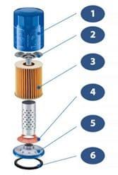
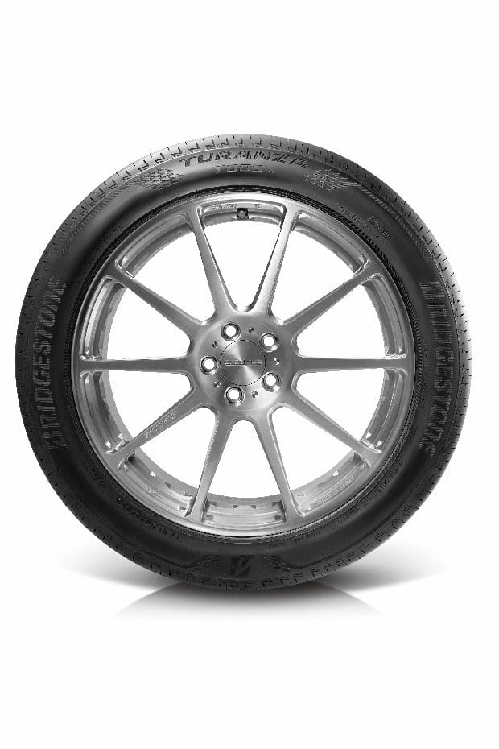
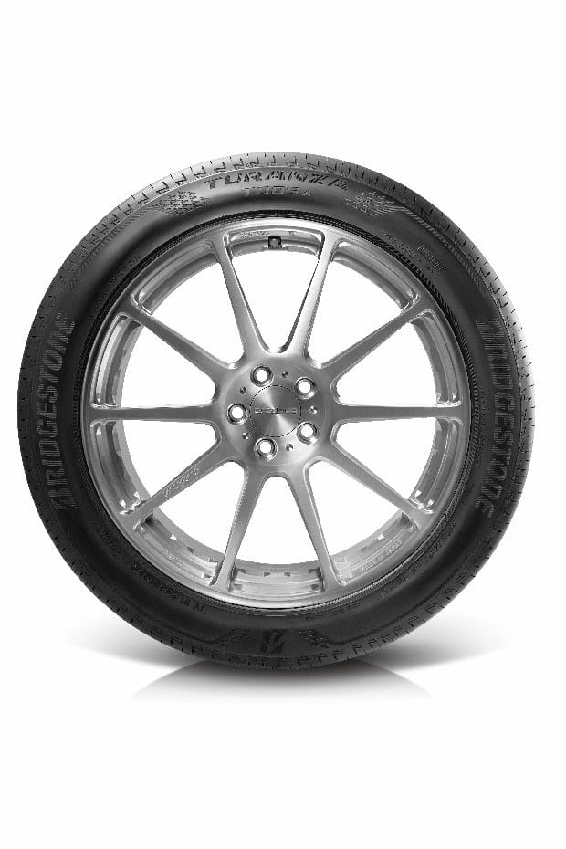

Phụ tùng ô tô chính hiệu Honda
Giới thiệu về Phụ tùng ô tô chính hiệu Honda
Phụ tùng chính hiệu Honda được phát triển và sản xuất để phục vụ cho xe ô tô Honda của bạ
Tiêu chuẩn chất lượng Honda tồn tại trên mỗi chi tiết phụ tùng của xe, phụ tùng chính hiệu Honda được sản xuất theo tiêu chuẩn cực kì nghiêm ngặt với tính đồng bộ giữa các linh kiện cho sự lắp ráp đạt độ chính xác cao nhất giúp duy trì tốt nhất chất lượng, độ an toàn và hiệu suất hoạt động của xe.
Chỉ phụ tùng chính hiệu Honda mới được bảo hành bởi các đại lý Honda trên toàn quốc. Mỗi phụ tùng trên xe hoạt động trong sự liên kết với các phụ tùng khác để tạo nên hoạt động của xe.
Nhiều phụ tùng không chính hiệu không được sản xuất theo tiêu chuẩn chất lượng và nguyên liệu của Honda, có thể không tương thích với các phụ tùng khác, gây ảnh hưởng đến hoạt động của xe, thậm chí gây tai nạn.
Dễ dãi đối với một chi tiết phụ tùng là bạn đã vô tình gây nguy hiểm cho chính bản thân mình.
Khi lựa chọn phụ tùng chính hiệu Honda, bạn có thể hoàn toàn yên tâm vào các tiêu chuẩn chất lượng cao nhất dành cho xe ô tô Honda của mình. Hãy giữ gìn chiếc xe của bạn bằng việc luôn chọn và sử dụng phụ tùng chính hiệu Honda.
Cách phân biệt Phụ tùng chính hiệu Honda1.Hãy đến các đại lý Honda trên toàn quốc để mua và thay thế phụ tùng ô tô chính hiệu Honda.
2.Tất cả phụ tùng chính hiệu Honda đếu có tem nước xuất khẩu và tem của Honda Việt nam

Tem tiếng anh (Tem nước xuất khẩu)

Tem tiếng việt (tem Honda Vietnam)
Một số phụ tùng cần kiểm tra và thay thế định kỳ
I. LỌC DẦU ĐỘNG CƠ
Dầu động cơ được giữ sạch bằng lọc dầu, bộ phận này giữ lại các chất cặn và bẩn vốn có trong động cơ. Vì chất cặn và chất bẩn tích tụ trong lọc dầu qua thời gian nên cần phải thay lọc dầu định kỳ đảm bảo cho dầu luôn sạch để bôi trơn khắp động cơ

2. Van xả: Giúp lưu thông dầu sạch và điều tiết lượng dầu khi động cơ bắt đầu khởi động
3. Màng lọc: Sử dụng màng lọc chất lượng cao giúp lọc những chất căn nhỏ nhất
4. Van hình trụ: Sử dụng cao su silicon chịu nhiệt. Giúp ngăn dòng dầu chảy ngược khi tắt máy, và cho phép lưu thông dầu trở lại khi khởi động máy.
5. Nắp đậy: Sử dụng công nghệ ép chính xác để đảm báo không bị hở
6. Gioăng: Là loại gioăng chịu nhiệt và chống dầu
II. BUGI

Bugi có nhiệm vụ đốt cháy hỗn hợp nhiên liệu/khí và bắt đầu giai đoạn đốt cháy trong động cơ. Khi bugi bị mòn sẽ giảm khả năng truyền điện. Bugi yếu hoặc bị hỏng có thể dẫn đến động cơ không nổ hoặc hoạt động yếu. Sự hoạt động của bugi kém dần cùng với quá trình sử dụng và cần phải thay thế bugi như là phần bảo dưỡng định kỳ. - Tại sao phải sử dụng Bu-gi chính hiệu Honda Bu-gi chính hiệu Honda được thiết kế với mục đích đem lại hiệu suất tối đa cho động cơ của bạn, đồng thời chúng được quản lý nghiêm ngặt theo tiêu chuẩn chất lượng ISO/TS 16949.
III. LỌC GIÓ ĐỘNG CƠ
- Tại sao phải sử dụng lọc gió động cơ chính hiệu Honda Lọc gió Honda chính hiệu được thiết kế để cung cấp các phân tử lọc tốt nhất, đảm bảo luồng không khí đi vào động cơ của xe là không khí sạch. Với việc sử dụng lọc gió động cơ chính hiệu Honda, những luồng khí sạch sẽ giúp động cơ của bạn đạt hiệu suất tối ưu mà không ảnh hưởng đến tỷ lệ tiêu hao nhiên liệu.
IV. BỘ MÁ PHANH
- Chức năng của má phanh ô tô Đối với phanh đĩa, phanh là kết quả của sự cọ sát của đĩa phanh đang quay được kẹp bởi má phanh. Ma sát này sẽ tạo nên sự hao mòn cho má phanh. Ngay từ giai đoạn nghiên cứu và phát triển, Honda đã chủ trương để đạt được hiệu suất phanh tối đa, duy trì cân bằng tốt nhất giữa lực phanh và độ bền của má phanh.
- Tại sao phải sử dụng má phanh chính hiệu Honda Sử dụng 100% nguyên liệu không chứa amiang, tốt hơn cho môi trường. Đạt được sự cân bằng giữa lực phanh và cảm giác thoải mái khi phanh. Kết quả này đã được thử nghiệm qua rất nhiều thí nghiệm tại các mức nhiệt độ và trong những môi trường khác nhau. Các yêu tố kiểm soát và chống mòn vượt trội được tích hợp trong má phanh chính hiệu Honda
V. DẦU NHỜN
Được nghiên cứu và phát triển bởi Honda R&D, các loại dầu động cơ Honda mang đến cho động cơ một hiệu xuất hoạt động tối đa và một sự bảo vệ vững chắc.
Chúng đáp ứng được các tiêu chuẩn chất lượng khắt khe của API (Viện nghiên cứu dầu mỏ Hoa kì).
Sử dụng tốt nhất với các động cơ Honda Các loại dầu động cơ Honda đang cung cấp:
Công thức pha chế đặc biệt này mang đến hiệu quả bôi trơn nhanh, cho hiệu suất hoạt động tối ưu.
Sản phẩm được sản xuất đóng phuy giúp giảm rác thải nhựa và thân thiện hơn với môi trường.
Công thức pha chế đặc biệt này mang đến hiệu quả bôi trơn tối ưu và khả năng làm kín bề mặt ma sát.
VI. LỐP XE
 
Các sản phẩm lốp chính hiệu Honda đảm bảo tiêu chuẩn và chất lượng Honda toàn cầu đang được phân phối tại các đại lý Honda ô tô trên toàn quốc.
Khách hàng được hưởng các chế độ bảo hành chính hãng khi thay thế lốp xe tại các đại lý của Honda.
VII. ẮC QUY
Hiện các sản phẩm ắc quy chính hiệu Honda đang được phân phối tại các đại lý Honda ô tô trên toàn quốc.
Hãy lựa chọn Phụ tùng ô tô chính hiệu Honda để đảm bảo an toàn cho chính bạn và người thân.